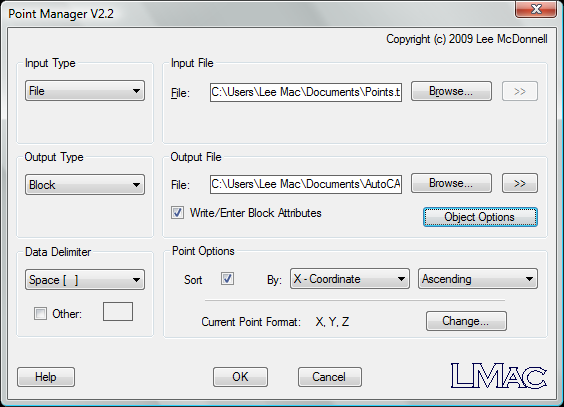
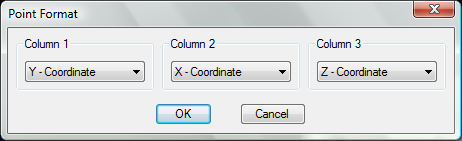
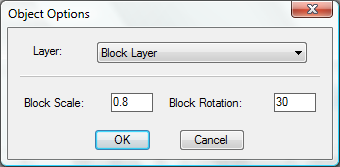

Point Manager
This page is delivered for consistency purposes only, as part of the LeeMac sample module of DynALisp, which shows how DynALisp turns existing AutoLISP programs into a module. The program and its description are the work of Lee Mac, who keeps all the credit for them. The original page, with the latest version, is on Lee Mac's website: https://lee-mac.com/ptmanager.html
| Function Syntax | LM-PointManager – original syntax: PtManager / PtM (see aliases) |
| Current Version | 2.4 |
| Compatible with AutoCAD for Mac? | No |
| Compatible with AutoCAD LT? | No |
| Original Page | lee-mac.com/ptmanager.html |
Program Description
This is an extremely versatile program engineered to manipulate point data in many ways. The user may select an input type (the source of the point data) and output type (the result of reading the data from the input object).
The input/output types may be a txt/csv file, a selection of AutoCAD Points, a selection of 3D/LWPolylines, or a selection of blocks. Point (and possibly attribute) data may be read from any of these sources, and subsequently exported to any of the above objects.
The program caters for point data in various formats (xyz, yxz etc) with arbitrary data delimiters (commas, semi-colons etc), and furthermore, the point data may be sorted prior to export.
If the selected output type is an AutoCAD object, various options are supplied to allow control of object Layer and block scale & rotation; these can be altered upon pressing the 'Object Options' button.
If attribute data follows the point data within a txt/csv file, the user may choose to populate block attributes with such data - similarly, attribute data may be extracted to a file from an input type of attributed blocks.
Further guidance is provided upon pressing the 'Help' button.
Dialog Preview
Main Dialog

Point Format Dialog

Object Options Dialog

Bundled program notes
;;----------------------------=={ Point Manager }==----------------------------;;
;; ;;
;; Program will allow the user to manipulate points in the drawing or a file in ;;
;; a variety of ways, including: ;;
;; ;;
;; From File:- ;;
;; -------------- ;;
;; ;;
;; - Insert a Block at all Points from a File (txt/csv) ;;
;; - Insert a Point at all Points from a File (txt/csv) ;;
;; - Create an LW/3D Polyline from all Points in a File (txt/csv) ;;
;; ;;
;; From ACAD Points:- ;;
;; --------------------- ;;
;; ;;
;; - Insert a Block at all/selected Points in a drawing ;;
;; - Export all/selected Points in a drawing to a File (txt/csv) ;;
;; - Create an LW/3D Polyline from all/Selected Points in a drawing ;;
;; ;;
;; From LW/3D Polylines:- ;;
;; -------------------------- ;;
;; ;;
;; - Insert a Block at all vertices of an LW/3D Polyline ;;
;; - Export all Vertices of an LW/3D Polyline to a File (txt/csv) ;;
;; - Insert a Point at all Vertices of an LW/3D Polyline ;;
;; - Create an LW/3D Polyline from all/selected LW/3D Polylines ;;
;; ;;
;; From Blocks:- ;;
;; ---------------- ;;
;; ;;
;; - Export all insertions of a Block to a File (txt/csv) ;;
;; - Insert a Point at all instances of a Block ;;
;; - Create an LW/3D Polyline at all insertions of a Block ;;
;; ;;
;; ;;
;; When reading from/writing to Files, a data delimiter may be selected from ;;
;; the drop-down, with the exception of using a CSV file, in which a comma must ;;
;; be used. ;;
;; ;;
;; The user can also choose to sort the points by X/Y/Z Coordinate, in ;;
;; Ascending or Descending order. ;;
;; ;;
;; When the input is of Block type and output of File type (or vice-versa), ;;
;; Block Attributes may be written (or entered). ;;
;; ;;
;; ;;
;; --<< Click Help for more information >>-- ;;
;; ;;
;;-------------------------------------------------------------------------------;;
;; ;;
;; FUNCTION SYNTAX: PtManager / PtM / PTM_clear (Resets Defaults) ;;
;; ;;
;; Notes:- ;;
;; ----------- ;;
;; If no Z-Coord is found, zero elevation is assumed. ;;
;; ;;
;;-------------------------------------------------------------------------------;;
;; ;;
;; Author: Lee Mac, Copyright © December 2009 - www.lee-mac.com ;;
;; ;;
;;-------------------------------------------------------------------------------;;
;; ;;
;; Version: ;;
;; ;;
;; 1.0: 05/12/2009 - First Release ;;
;;-------------------------------------------------------------------------------;;
;; 1.1: 05/12/2009 - Added Dialog interface. ;;
;;-------------------------------------------------------------------------------;;
;; 1.2: 11/12/2009 - Updated Dialog Interface to allow for various ;;
;; input/output. ;;
;;-------------------------------------------------------------------------------;;
;; 1.3: 12/12/2009 - Added ability to Create LW and 3D Polylines. ;;
;;-------------------------------------------------------------------------------;;
;; 1.4: 14/12/2009 - Added ability to select data delimiter when reading ;;
;; from/writing to files. ;;
;;-------------------------------------------------------------------------------;;
;; 1.5: 17/12/2009 - Fixed Bug when selecting 3D poly as output. ;;
;;-------------------------------------------------------------------------------;;
;; 1.6: 26/12/2009 - Added Ability to Extract Block information. ;;
;;-------------------------------------------------------------------------------;;
;; 1.7: 29/12/2009 - Added ability to sort points. ;;
;; - Added option to write/enter block attributes. ;;
;; - Improved Default Handling. ;;
;; - Added option to use 'other' delimiter. ;;
;; - Added ability to change point format. ;;
;;-------------------------------------------------------------------------------;;
;; 1.8: 02/01/2010 - Created Help File & added Help button. ;;
;; - Fixed bug when selecting a block input. ;;
;;-------------------------------------------------------------------------------;;
;; 1.9: 04/01/2010 - Modified Delimiter functions to accept delimiters of ;;
;; length > 1. ;;
;;-------------------------------------------------------------------------------;;
;; 2.0: 05/01/2010 - Modified Delimiter Mode_Tile functions. ;;
;; - Fixed bug when selecting output block from drawing. ;;
;;-------------------------------------------------------------------------------;;
;; 2.1: 07/01/2010 - Corrected Help File Typo. ;;
;; - Updated Delimiter Check Function ;;
;;-------------------------------------------------------------------------------;;
;; 2.2: 07/01/2010 - Added Object Options Button and Dialog. ;;
;;-------------------------------------------------------------------------------;;
;; 2.3: 08/03/2010 - Fixed bug to include elevation. ;;
;; - Added code to disable/enable Object Options button. ;;
;;-------------------------------------------------------------------------------;;
;; 2.4: 19/04/2010 - Fixed bug when reading from files. ;;
;;-------------------------------------------------------------------------------;;
Command Names And Aliases
As in every DynALisp module, each program of this sample module has one main command, named LM-*, and the original command names of Lee Mac's page are kept as its aliases: they run the same command, and can be added, renamed or removed in Dyl-Suite (saved in Resources\Aliases.csv). The rows marked ↳ are child commands of LM-PointManager: they are run by their alias, or picked from LM-PointManager when it lists them (their command is named Pst-*).
| Command | Aliases | Name |
|---|---|---|
| LM-PointManager | PTM, PTMANAGER | Point Manager |
| ↳ PTM_CLEAR | – | Point Manager Reset |